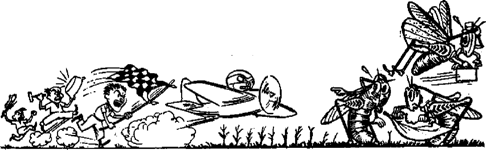

Shanghai Falls to the Communists
As it looked to a neutral inhabitant of the city
■ ♦ » .....
Fighting the Locust Plague
Not even modem methods of warfare have gained victory
Everlasting Life Possible?
THE MISSION OF i'HIS JOURNAL
News fottrces, that are able to keep you awake to the vital issues of our times must be unfettered by censorship and selfish interests. “ Awake I" has no fetters. It recognizes facts, faces facts, is free to publish facts. It is hot bound by political ambitions or obligations; It is unhampered by advertisers whose toes must not be tread upon; it is unprejudiced by traditional creeds. This journal keeps itself free that it may speak freely to you. But it does not abuse its freedom. It maintains integrity to truth.
“Awake uses the regular news channels, but is not dependent on them. Its own correspondents are on all continents, in scores of nations. From the four comers of the earth their. uncensored, on-the*scenes reports come to you through these columns. This Journal’s viewpoint is not narrow, but is international. It is read in many nations, in many languages, by persons of all ages. Through its pages many fields of knowledge pass in review—government, commerce, religion, history, geography, science, social conditions, natural wonders—whyt its coverage is as broad as the earth and as high as the heavens.
“Awake I** pledges itself to righteous principles, to exposing hidden foes and subtle dangers, to championing freedom fon all, to comforting mourners and strengthening those disheartened by the failures of a delinquent world, reflecting sure hope for the establishment of a right* eous New World.
Get acquainted with “Awake!” Keep awake by reading “AwakeI”
Published Semimontbtt By WATCHTOWER BIBLE AND TRACT SOCIETY, INC.
117 Adams Street Brooklyn 1. N. Y., U. S. A.
N, H. Kmorh, PrestdsM Gwii Suitkb. Secretory
Five cents « copy One doUsr a year
iMtlttMM* «b«ad be rent t® flfftot la Mff »»• try tn conmU»m» with rtfUationi tn ssfb dellrery of tnoney. Eunltunea *n accepted it Brooklyn from cguntriM wh#re no effice te lootad, by h)tematk>n*l money ordw only. Bubecrtotirm rates Id different countrtfis arg here stated tn local currency.
■etiea wt ociqelratloim (with renewal blank) to Mint at lewt twt> ia«i before Mbscriptlon Kcpiree.
Ghuw at idirect when rent to eur effloe oar be erpectad affective within ate month. Send your old u well u new addreu.
ttfficea Yearly Subscription Bate
AiMriM, U.S,, 117 Adame St, BtMklys 1, N.Y, JI Alretrajl*. 11 Beresford Rd.. Btrathfiejd, N.S.W, 8i Cwtlida, 40 Irwin Are.. Tomia E. Ontario *1 E*| land. 34 CrafBb Terrace, London, ff. 2 Eg 9*ith Africa, 633 Beaton House, Cape Tqwd fie
&itend M recood-elfta matter at Brooklyn, N. Y-, Act tf Harts 9, 1879. fritted tn V. B. A.
CONTENTS
Colom bifl ’s Black-skirted Politidans
Political Priests Reap Catholic Resentment 8
Left-Handers in a Right-Handed World 9
Not Yet the Answer to the Biddle
Life and Love in the Animal Realm
Shanghai Falls to the Communists
Correcting the Deformed and Crippled 17
Raising the Family
Obstacles in the Fight “Thy Word Is Truth”
Whom God Begets Spiritually Everlasting Life Possible?
Watching the World
CURRENTLY featured in the news are the ftequent revolts in Central and South America. Colombia, one of the larger countries, for a number of years had been considered as one of the most peaceful and democratic in the Latin-American realm. Then on April 9, 194Sj Colombia was catapulted into the scene of world discussion with the violent eruption of bloodshed and pillage following the assassination of the beloved leader of Colombia’s masses, Jorge E. Gaitan. However, Colombia was quickly forgotten by the larger nations as almost daily changes in world affairs popped. up. But let us take a peek into Colombia to see if peace again reigns.
_ A survey of the newspapers aiid magazines for months prior to and including May, 1949, testifies to the deplorable conditions that confront the people. From one end of the country to the other, particularly in the rural areas, political violence and killings occur almost • daily. Homes are burned to the ground, presenting their inhabitants with the choice of being roasted alive or of being shot on their escape frofii the flames. Miniature civil war exists in sections of the country. At one place a “no man’s land”, 15 kilometers [about 9 miles] wide, is found. One daily newspaper features the pictures of a man who is claimed to have been brutally murdered in front of his two children. His eyes were gouged out, testicles cut off and his tongue removed. Wholesale exodus is made from various regions with the peasants unable to work their own farms due to the political violence.
The seriousness of the situation can be appreciated by considering the report of El Tiempo, which states that, if the periodicals have reported accurately, more than 2,000 persons have perished as victims of party passion during the past two years, And that, if the hundreds of dead from the April, 1948, disturbances are included, the number of slain surpasses that of any of the revolutions staged in the other American countries during the same period.
The cause of the violence lies in the intense hatred between the Liberals and Conservatives, Colombia’s traditionally prominent parties. Instead of trying to alleviate the situation, many priests have made matters'worse by their political oratory. Not only has the “church” abstained from sowing peace, but she has purposely fanned the fanatical fires of inter-party hatred, openly championing the Conservative party and condemning Liberalism. It is not the voice of Communism that says this, but is the opinion shared by all open-minded Colombians.
From 1930 to 1946 the Liberals had exclusive possession of the presidency.
Under such rule the Catholic Church had its rights respected although!! did not enjoy the more exalted and influential position of Conservative rule. Then in 1946 a split in the Liberal party permitted a Conservative president to be elected- Congress, however, continued with a Liberal majority. Under Jorge K Gaitan the Liberals reunited in 1947, promising a victory in the 1950 presidential elections. Although the Liberals have carried on a campaign for the reconquest of their power since the 1946 defeat, both parties began their political drives _ in earnest at the beginning of 1949, looking forward to the June 5, 1949, congressional elections.
Perhaps the “church” thought that the two parties were not evenly matched, since it is well known that the Liberals are stronger in numbers than the Conservatives. Then, too, she might have decided that the Conservatives were not employing the proper tactics to influence the masses. In any event, with a "let me show you how” attitude she plunged into the political campaign with zeal and zest. It was not long before the theme of the campaign was fixed: "Church versus Communism/'
The black-robed politicians were so active in' trying to coerce and browbeat their flocks into voting for the candidates that guarantee the interests of the “church" that consistently during the months previous to the election they were in the news. One headline read: "Five Bishops Prohibit Voting for Liberalism Under Pain of. Mortal Sin/' (Eco Nacional, April 26, 1949) Luis E. Benoit, priest of Caicedonia, Valle de Cauca, hit the headlines when he condemned as mortal sin pro-Liberal voting. "All Those Who Vote for Liberalism Will Go to Hell? (Jornada, May 3,1949)
■ What is the following if it is not a violation of the teachings of Jesus and His apostles? El Derecho', a religiouspolitical weekly, was denounced by the governor of Antioquia as "a vehicle of incitations against public order". Pointedly it urged the Conservatives to arm themselves, To quote from El Derecho:
In this manner I imagine that Our Lord htm-self would say on Friday, April 9, to the nuncio and to the archbishop and to all the bishops of Colombia and to the priests and the religionists: he that doea not have a revolver, sell his cloak and buy one. And it should be noted that when the Jewish mob came near to Our Lord his disciples asked him: shall we siiiite with the sword? And Our Lord didn’t say no. And then Saint Peter drew his and with one stroke struck off the ear of the high priest’s servant. And if he had cut off his head as he did his ear, Saint Peter would still have been Saint Peter, And the same Jesus gave a good lashing to Judas and to all his gang. Not of course with his hand nor with a strange weapon but with the sword of his blessed and powerful tongue. And therefore Our Lord didn’t sin, neither did Saint Peter sin, neither sinned Moses killing the Egyptian that was attacking the Hebrew; nor did Elijah sin killing with the rays from heaven on two occasions, including fifty soldiers and their captain who wanted to seize him; neither did the angel sin, who in one night killed 185,000 men of Sennacherib’s army. True, Our Lord said to Peter: Tut up thy sword into its place’. This means that once the proper defense is made, the weapon should be put away and not left in the victim. [El Tiempo, April 10,1949]
Doubletalk from the Archbishop
On April 22, 1949, the archbishop of Bogota released a pastoral after many priests had put the "church" on the spot. But the pastoral turned Ont to be ambiguous, for the Liberal newspapers interpreted it as a condemnation of the religious-political clergy. But Consrervat/re newsmen heralded the pastoral as a vindication of the campaigning priests in their Communist crusade. On Sunday, May 1, several incidents took place as a result of the pastoral In the church of San Francisco, one of the most prominent in Bogota and located in the heart of the city, a Franciscan priest rose, read the archbishop's pastoral and then proceeded to give his interpretation of it. He warned that Catholic families that professed Liberalism ought to change their political views or change the name of their party. He referred to the “governments that had expelled religious groups from the country”. (No doubt he meant the expulsion of the Jesuits on two occasions,)
When the congregation had enough of the Franciscan's political views they started to protest. Women and children began leaving the church, fearing violence, Men protested in loud voices. Word spread rapidly and outside the church groups formed, noisily voicing their objections to the clergy's intervention in politics. The priest became indignant at this reaction and cried out that he was not afraid of anyone or anything and that he was ready to die as the first martyr, if it was necessary, to defend the holy cause of religion. Only when military police reinforcements arrived was order restored and the throngs dispersed^
Not to be overlooked are the frequent threatenings of “Monsenor” BuHes, An-tioquian bishop, who spouts off with regularity. In one of his pastorals that El Tiempo refers to a$ “a political proclamation” he warns that “Catholics must choose between Liberalism and Catholicism and that the faithful must defend their religion, their homeland and their homes, cost what it may, even blood and life”. On another occasion Builes affirms that Liberalism is the enemy of the church. He tries to convince the gullible that the June 5 elections are '“between two antagonists, one that believes in God and the other that denies him\ “If you are Christians, vote for the candidates that give guarantees to your religion, and that do not hand your homeland over to foreign powers, to Russia or to communism.”
From the semimonthly publication, Critica, May 4,1949, we take the following excerpt from their editorial “The Political Clergy”:
We suppose that in the offices of the premier and foreign relations accumulating daily are the complaints against the priests that employ the pulpit to incite to the political crusade or to exercise their spiritual power as a coercive force to provoke in their parishioners the renunciation of their personal political ideas. And of scandalous public notoriety are the pastorals, circulars and sermons of bishops and priests in which armed fighting is brazenly and openly encouraged.
Since the incriminating evidence is so plentiful against the black-skirted politicians in Colombia we set forth in this article only a few of the highlights of the religious-political crusade. Note the following :
The priest of the village of San Mateo, Florence Torres, has established his own armed bands of “purification” and with a blue tunic (blue is the Conservative party color) and a prayer book in hand forces the Liberal peasants, captured by his gangs, to renounce their political views. On finishing the ceremony the new Conservatives receive the blessing as drops of holy water fall on them. At El Espino the tactics are different. There blue militia has been organized that receive from Pedro Leal semiweekly military instruction and once or twice a month perform maneuvers under the priest's direction. [El TiempOf April 23, 1949]
Colombia's most well-known daily newspaper, sedate El Tiempo, usually quite careful what it says as touching the Roman Catholic Church, has carried several editorials pointing an accusing and disapproving finger at the clergy's mixing in politics. “The Church,. that could fulfill such a special mission in the spiritual welfare of the people and that ought to be an instrument of conciliation and a symbol of alliance, has boldly taken aides in the fratncidal conflict and the words of the majority of its ministers are no longer of peace but of agitation to combat/' (El Tiempo, May 2, 1949)
In rural areas can be found posters along the roads showing the necessity of a Conservative victory in the elections. Why! Well, if not, all the priests will be assassinated/The population is reminded that on April 9, on crying out "viva” for the Liberal party, the clergy were murdered. A familiar cry from the Conservatives is: ’*Dios esta con nosotroe” SGod is with us), meaning that they have de "church” behind them blessing them in all that they do. Such pleadings find reception by the ignorant or by those that willingly close their eyes to the priests’ activity.
Any sensible person knows that God has nothing to do with the polities of this world and has special contempt for the rottenness existent in Colombian politics, If the priests would limit their activity to their religious duties and forget about the political campaign they would not have tp worry about persecution from any quarter. But as long as they continue to stick their necks out and look for trouble they will find it What makes an informed person wonder is why the whole Colombian population is not fed up with the entire corrupt system of Rome’s devilish representatives in their homeland.
In condemning Liberalism the Conservatives and the clergy freely use th© expressions "reds”, "communists” and "communism” in referring to the Liberals. But does communism constitute a real threat to the Catholic Church in Colombia! And is it true that the Liberals are Communists!
Although the Communists were accused of the April 9, 1948, disturbances, "Monsenor” Builes confesses that they were not great enough in number to cause that "spontaneous tragedy”. It is admitted ny the Conservatives that ii* reality true Communists are not very numerous in Colombia but that the Lit erals embrace communistic ideas. They claim that the very fact that the Liberals have never clarified their position in connection with Communism is in itself an admission that they are allied with it.
Franciscan priest Jos6 Guadalupe Mojica, noted singer, attended the Janu-, ary Eucharistic Congress in Cali and later gave a number of concerts in the capital. At that time he stated that Colombian Liberalism was one of the most Catholic parties in America.
The fact remains that Colombians are still Catholics and not communists. True, due to the extremely high cost of living and the low wages paid throughout the country, some have turned to communistic thinking; perhaps because no other form of government eould put them under worse conditions than they already find themselves. However, those that are educated can readily see that Communism holds out no hope to the people, since, to rule, it has to deny them the right to think for themselves, becoming slaves of the state.
But Colombians are so Jteenstamed to political activity among the priests and to hearing political speeches from the pulpits that the majority continue to subject themselves to her doctrines and dominion. One group of workers, protesting against the. position of the "church” against their union, declared that in spite of such they would continue to be both Catholics and Liberals until their death. They know that the Catholic religion is still the popular thing, and so they attend mass and profess to be Catholies whether they have faith or do so for convenience’ sake. At any rate, Catholicism continues to be a form of worship and the masses accept that which their fathers taught them—subservience to the "church”.
On the other hand, the "church”, confident that the gates of hell will not pre-
\ail against it and witntheassurance that she will survive in spite of all opposition, continues to steer the votes toward the party that will give her the power she craves, condemning all those that do not fall in line, pasting the "Communist" label upon even her Catholic "children".
What is noted, too, is that a continual number of good-will persons are having their eyes opened to the hypocrisy and the unchristian conduct of the “church”. They are able to see that the “church's” policy during the Dark Ages, the. Inquisition, and toward the Catholic dictators, Hitler and Mussolini, is the same ruthless policy that she is pursuing today in Colombia.
Firecrackers roused Bogota's populace before daybreak on Sunday, June 5, that all voters might get to the polls to take part in the congressional elections. The army was on hand to supervise the balloting, and as a result the agitation that usually occurs was kept at a mini-muni, with only a few deaths, and those in the rural areas of the country.
The following morning found the radio quite silent as to the election Returns. Hence, bogotanos had to turn, to the newspapers for the results. Bold and startling headlines assured both the Liberals and the Conservatives that their parties had each won a decisive victory. One Conservative daily boasted a 150,000 majority in the voting with an advantage of five seats in the House of Representatives. Liberal Jornada claimed that "in spite of' fraud and violence” its party had polled at least 100,000 more votes than the opposition. Such conflicting reports continue^ until Thursday, when it appeared that the Liberals had polled a decided majority vote, although losing a few seats in the House of Representatives. On June 24, nearly three weeks after the elections, the following figures were published: Liberals, 931,794; Conservatives, 804,-
344; Communists, <6,823. (This report was nearly complete, yfet lacking 9 mu* nicipalities which would make practically no difference in the final results.)
The Liberals carried 9 of the 15 departments (states) and 13 of the capital cities. The Liberal strength lies in the more populated areas, whereas the Conservatives hold more sway in the rural sections where the priests are able to keep the people in ignorance and enslaved to the church. In Bogota, Colombia's capital, the Liberals polled 63,000 votes, to compare with 20,000 for the Conservatives. Safe estimates give the Liberals a majority of eight seats in the next House of Representatives, that is, 70 Liberals and 62 Conservative#. The actual Congress has 73 Liberals as against 58 Conservatives in the House, with 34 Liberals and 29 Conservatives in the Senate.
Interesting to note was the balloting of -the priests who had been so very active in electioneering previous to June 5. Although they voted throughout the country, the only results we have at hand are those from the capital city. Out of 543 that went to the polls all but one voted Conservative. The lone vote was a blank ticket. The Conservatives bewailed such a poor showing by the priests, since Bogota alone has more than 3,000, excluding those studying for the priesthood in the seminaries. Incidentally, special voting tables were set up at one of the police stations to prevent any possible agitation against the black-skirted politicians by Colombian Catholics who were disgusted at the political campaigning from the pulpits.
Although the Liberals I d claimed that Conservative-instigated violence and fraud had deprived their followers of the right of suffrage in numerous villages throughout the country, the Conservatives boasted that complete calm and guarantees had accompanied the elections. Only after they realized that defeat was theirs did they raise the counterery of fraud and violence on the part of the Liberals.
With the June 5 elections teiuiinated the two political parties are already engaged in their presidential campaigns which come off next spring. The Liberals know they have a majority if they can secure guarantees to vote in the rural areas, and they also know that to win next year they must be united. The Conservatives realize that they gained ground during the recent elections, and are determined to gain a majority vote next time. They know that if they cannot elect another Conservative president the Liberals will have almost complete control of the government.
To the rescue has come Conservative strong man Laureano Gomez, who is /being publicized as the Conservative candidate. After a self-imposed exile in Spaii> for over a year following the assassination of Jorge E. Gaitan he has now returned to his homeland to take over the leadership of his Conservatives. Time will tell as to how many of "Franco’s methods he has accepted. Tuesday afternoon he made a swift entry into the capital amid a display of police protection. During the manifestation Conservatives and Liberals were kept apart by military police. A few exchanges of rocks showed the seriousness of the situation.
Several times the police, with bayonets fixed, forced large groups of Liberals to retreat.
It appears that the presidential race will be even more bitterly contested than that of the congressional elections. Violence and bloodshed continue, with deaths being reported from various rural areas frequently. The present deplorable condition in which Colombia finds itself is a national disgrace but it is only a part of the confusion and hatred that engulfs the whole world at this time. Men are powerless to overcome such a state of affairs.
This fact stands true: Whatever power the Roman Catholic church does receive will be shortlived. A fate awaits her that was foretold long ago and continuously throughout the centuries. The world conditions now upon us indicate strongly that her destruction is close at hand. So, you black-skirted politicians, go ahead with your nefarious political activity. The "short time” allotted for Satan and all his agents, invisible and earthly, is closing in on you. Your doom is sealed. Priestly black skirts stained red by the shed blood of thousands of innocents will soon be no more. (Jeremiah 2:34) Jehovah God's new world will soon carry out its appointed task and then that live will enjoy a rule that is neither demon religious nor political. —Awake! correspondent in Colombia.
Politic^/ Pnests Reap Cathofic Resentment
Bogota, Colombia, July 11 {AP>—Bishop Luque <>f Tunja has issued an interdict dosing all Roman Catholic churches and chapels in Sogamoso, second largest town of the Boyaca department, and ordering priests to leave the town. He took the action, bis decree said, because of a long series of “grave complaints in connection with actions of delinquency carried out collectively against the priests”. (An interdict in canon law is a prohibition which excludes the faithful from participation in holy things.) The decree said the offenses included ‘‘riots, stoning, shooting of firearms and throwing of bombs against the residence of the wain parish pastor". An Interior Ministry official said the situation possibly was aggravated by the “attitude adopted by the clergy” during Colombia’s recent elections. Liberal party leader® said many priests tried to prevent parishioners from voting for Liberal candidates.—N. Y. Times f July 12, 1949.
LEFT-HANDERS
R1GHT44ANDED WORLD
TN ANCIENT times, when Judge Ehud 1 thrust a dagger into the belly of wicked King Eglon with his left hand and delivered Israel from the oppressive rule of the Moabites, the ability to use the left as well as the right hand was considered a great advantage. (Judges 3:15-30) In this age when so many inventions and devices are molded for the convenience of a right-handed civilization, left-handedness is considered more or less a handicap. It is not surprising, therefore, that investigators and students of child-psychology have made an effort to find out what fundamental causes lie at the root of hand preference. Study has also been conducted in an effort to find out if the 15 to 25 percent “natural” left-handed children can be transformed .into right-handers without causing complications or injuries to their mental and physical efficiency.
It was long supposed that when a baby was born both hands were equal, and preference in time for either the right or the left was the result of habits,'training and education. This theory was supported with the observation that babies seem to reach for their toys with either hand until they are about six months old and then they begin to show a preference for one hand. In due time this theory was replaced by others, but recently new advocates for the older theory have spoken out
When the “equality” theory, or the belief that babies were born as natural ambidexters, that is, with the ability to use either hand with the same efficiency, was replaced, the teaching that there was really a hereditary physical difference in
IMS
the structure of the body was accepted. The substance of the latter theory was that the tendency to use the right hand for fine manipulations was due to a certain “type of inherited nervous structure”,-which in turn was thought to be related somehow to the circulatory organs. While it was believed that exercise could exaggerate this one-sided development, yet hereditary characteristics were thought to be primarily responsible.
Evolutionists often set fofrth ridiculous “explanations” for the trait of righthandedness. One of these “educated ideas” was that in the early days warriors carried a shield on their left arm to protect their vulnerable heart, and because they were forced to use the right hand to wield the sword they became right-handed. Another theory put forth by evolutionists is that right-handedness goes back to the time when man rose and began walking upright. Because his heart, stomach and other vital organs were on the left side of his body this made the right side some 15 ounces heavier than the left. So, in order to balance up this difference and permit himself to walk on an even keel, man began carrying a pound weight around in his left hand, and this in turn forced him to use his right hand to beat out a living. What magnificent nonsense!
Dr. H. D. Chamberlain, after studying the heredity theory, concluded that most of us are right-handed because our parents and grandparents were righthanders. According to him, when both parents are right-handed only 2,1 per-
9 eenr or their children are left-handed, and when both parents are left-handed 17.3 percent of the offspring are “left-iea”. But what does this prove! If anything, it proves that heredity is not the whole answer; otherwise right-handed parents would rarely have left-handed children and the offspring of left-handed parents would average far more than 17 percent left-handers.
preference. One holding such conclu- processes might be developed in transBions, Dr. Gertrude Hildreth, thinks that forming a left-hander into a rightparents and teachers are responsible to hander, believes that the difficulty lies a large extent for children's oeing lefthanded. The first time a child grasps a spoon to feed itself it begins to form a habit by associating together hand, spoon and mouth. Hence, if parents were diligent to see that the child fed itself with its right hand the first time and each time thereafter, and if the teacher
Such findings, together with other facts, have made other investigators conclude that education and training are responsible as much as anything for hand were just as diligent in teaching the art of writing, then rarely would there be a left-handed adult in later years. Hildreth admits there may be a tendency for a child to be left-handed, but she thinks that, depending on its age, intelligence and personality, it can be changed oyer, and should be, since we live in a right-handed world.
It has long been known that the left side of the brain controls the activity of the right arm, while the right lobe governs uie left side of the body. Because of this, educators and doctors at one time advocated that children learn to use both hands with equal efficiency, on the theory that ambidexterity caused equal development of both brain lobes. Later on other authorities came to the conclusion that, since the left side of the brain controls speech as well as motor functions of the right hand, then overdevelopment of the left hand (controlled by the right side of the brain) would lead to speech impediment.
Those that believe there is an inborn tendency in the brain to use either the right hand or the left say that to force a Natural” left-hander to change means to make it shift its thinking process from one side of the brain to the other, and to do this is liable th cause emotional strain and mental confusion in the child. Hence, to play safe and avoid such things as stammering or disability in reading the Child should be left to choose which hand it pleases without interference. Dr. Hildreth, while admitting that complications in emotional and mental in the method used rather than in the actual change itself. If a change is to be made, all agree that it should be made during the first and second year, before the speech habits are formed.
Though Dr. W. Russell Brain, of England, says there is no difference in the size of man's brain lobes, some people contend that the left lobe of a righthanded person is larger and more highly developed. Hence, these say, left-handedness results when the left lobe is deficient
or
In an effort
to substantiate this theory the mental capacity of twins has been compared in cases where one twin is right-handed and the other is left-handed. Statistics have also been gathered to show that there is a higher percentage of lefthandedness' among the feeble-minded than among- the population in general.
At least one doctor, Abram Blau, of New York University College of Medicine, attempts to combine some of the theories on left-handedness by listing three possible causes. He thinks that newborn babies are “bilateral” with no preference for either hand; “no-handedness”, in other words. He-then says that one cause for left-handedness is a deficiency in either the physical or the mental make-up which hinders the child from learning to be right-handed. Another cause is faulty education. Either the child is allowed to imitate the eating and writing habits of its parents when these are left-handed or, due to ignorance of some parents who believe that it is dangerous to try to change an/ left-handed tendency, the child is not educated properly in the use of the right hand. The third cause set down by Blau is ^emotional negativism”; which he defines as nothing more than contrariness.
Vof Yet the Answer to the Riddle
Fishing in other waters for the answer sis to what causes handedness investigators have studied other animals besides tnan. Hunting dogs, it is observed, raise the same forepaw when “pointing”, and though it varies in individual dogs, each log invariably raises the same paw each :ime. One tusk of an elephant is always arger than the other simply because t is not used as much for rooting as the )ther tusk. Insects such as crickets and fatydids show a preference toward one jide or .the other in the way they fold their wings. One of the claws of lobsters and crabs is always larger than the other, due to more usage. Fish such as flounders, halibut and sole are particular to lie on one side when they are mature, although when young they swim around like other fish. Whether there is any connection between these peculiarities in the lower animals and handedness in man is not clear, nor are scientists by their study of the lower animals any closer to solving the "left-handed riddle”.
Psychologists, in an effort to find the answer, have branched out to include in their study what relation there is between handedness and the use of the feet, leggj eyes and ears. Which shoelace do you tie first? Which foot do you put forward when stepping up a curb or ladder, a thing thought to be predetermined before a baby takes its fir st step? In using a shovel or spade, which foot do you use, or which hand goes on the topi Which foot do you wash first when taking a bath T In driving a car, though you think you use both hands equally, which glove wears out first? which eye do you wink? Or which eye do you use to look through a telescope or a keyhole? Other tests include the folding of the arms and hands. Individuals have preference as to which arm they place on top, and which thumb falls on the other.
Complicated and confusing? Yea, for man's investigation is still in the primitive theoretical stage.
Who Invented the Plow?
<1 That question may be forever unanswered, ajs a crude type of plow was used in Egypt when the pyramids were young. It merely scratched the surface, but it was a plow. The Pilgrims employed clumsy models requiring eight oxen to pull. Few reel improvements were made till 1785, when Robert Ransome of England introduced a east-iron share. Twelve years later Charles Newbold of New Jersey patented a plow with a cast-iron moldboard, but farmers rejected it with the claim that the metal poisoned the soil. Thomas Jefferson is famous as a statesman, yet he tackled the problem of designing a better plow. Jethro Wood of New York patented in 1819 the first really practical iron plow, After designs by Daniel Webster and John Lane, John Deere began to make farm implement history with his experiments in the development of more efficient plows, and twenty years later James Oliver added his skill to the task. So great Were their strides that almost a century passed without any major changes in the plow. Several years ago a veritable bombshell rocked the agricultural realm when some claimed deep plowing caused erosion and lowered fertility, and advocated that it be replaced by disking. Yet the plow still turns the soil.
iSffPTEMRSR 8} 1949 11
*8? In April came a jail break for freedom. The Mew Jersey state police were
called out to find the fugitives, but the countryside was not alarmed. It was only
& eight penguins. They had arrived at La Guardia airport and were traveling by
* truck in New Jersey when they made the eage-break. Six were retaken, but two
rugged characters were not stunned by their Leap from the moving truck, picked themselves up and hit the road for freedom.
They
when pony,
V Oh, to load a dog’s life! And also the life of cats and horses and hogs, it is on the Upson, farm in Ohio. When the pie wagon stops, four horses, a a hog, two dogs find a generous assortment of cats lick their lips. They have been dining on pie for years, broken pies that cannot be marketed in the usual manner, but fresh and delicious nonetheless. They drool over all kinds, except pumpkin.
In Chicago Ambrose always has four doves for dinner guests. Most cats— Ambrose is a cat—would star them on the menu rather than the guest list. Even Ambrose started life that way, chasing birds when a kitten. But his master brought home the doves, protected them from Ambrose at first, then gradually brought them together. Now the doves won’t eat without Ambrose, and oat add birds bunk together, too!
Last April a fierce BrahnSa bull in Nevada died of a broken heart. A cow wandered onto the railroad tracks and was killed by a train. The bull maintained lonely vigil beside her, preventing section hands from burying her. For weeks be kept watch, refusing to eat the hay thrown off by passing train crews. Finally he died, starved and broken-hearted. The section crew returned and buried both together.
Got a duck that won’t quack? Nothing to get excited about. It is only a strong ailant male. Only female ducks, not males, quack. The ladies do the talking, the gents listen- Another thing: panicky ducks in ponds sometimes get water-logged and drown, and youngsters that get their backs wet in heavy rain are soon dead ducks. So don’t gaze at the rain and say: “Good day for ducks,” T’aint true!
Misty, a blond cocker spaniel, lost her only pup and was pining away till her owners brought home twenty-one chicks. During the night Misty cut through such red tape as adoption papers and carried the chicks one by one in her mouth into her closet-bedroom quarters. She has mothered them fondly, evenly fiercely.
*8? Two yolks in one egg is no oddity, but a hen in Georgia packed eight in one egg! It measured ten and a half inches long and eight and & half in circumference. Inside the large egg were three yolks and another egg, which in turn had three yolks and an egg within it. The center egg had two yolks, to make eight yolks and three eggs all wrapped up in one. Recall the cartoon of the rooster showing a hen an ostrich egg and saying he was not complaining but only showing what could be done? Well, this hen did it, and then some!
y This year two Harvard scientists .reported whalea that whistle, sgnea), ciurp, mew, cluck and even trill. An underwater microphone with amplifier eavesdropped on white whales or porpoises in the lower Saguenay river in Quebec, The loquacious whales were said to compare with «ueh chatterboxes as monkeys and men, and are nicknamed «$ea canaries”.
SWANG
"■■T
. I ’J . r ’ ' . I- . . ST • •
City changes hands ( ernight
to fa st-moving Red armies
ONCE again victory comes easily to the Chinese Communists as Shanghai's six million fall to advancing Red armies. Red occupation of this great commercial metropolis of China had long been considered inevitable, but that it should be taken with such ease and smoothness came as a pleasant surprise and relief to most people. The Nationalists had built a tall wood fence around the city, and set some of their best troops to keep the Reds out. They talked about defending it as another Stalingrad. But the fruitlessness of such a stand was evident, and the collapse that came was, without doubt, the best thing for the city and everyone concerned.
Communist troops approached the city from two directions, both following the line of the rail way into the city. One fofce approached from the west along the Nanking-Shanghai railway, making their main objective the port of Woosung at .the entrance of the Whangpoo river. Capture of Woosung wTould put a stop to all Nationalist river traffic to Shanghai some dozen miles up river, and also cut off any'means of escape for fleeing Nationalists when the end came. In defense of Woosung the Nationalists put up some of their best fighting of the campaign, and succeeded in holding on to tfe port till practically the last.
The other attacking force pushed up from the south along the Hangchow-Shanghai railway with the large airport at Lunghwa their first objective. Here theNationalists put up a strong defense
SEPTEMBER 8S 1949
and the Red advance slowed down. The Nationalists used heavy artillery and their planes were up daily bombing the Red columns. The Reds relied upon their thousands of infantry soldiers moving like a human sea to overflow the Nationalists’ defenses. The noise of these two battlefronts was a nightly lullaby to the crowded city dwellers for almost a month.
In the south the fighting began to shift to the east side of the Whangpoo river, over toward Shanghai’s back dour. Here rapid progress was made in this weak spot in the defense, and soon these forces had practically completed the encirclement of the city as they stood almost Opposite Woosung on the east bank of the Whangpoo.
Slowly but surely the Nationalist defenders were being overwhelmed. Defeat was certain, and Nationalist top officials quietly began slipping away by every available plane. During May 24 one column of Reds began penetrating into the outskirts of the city in the southwest. Nationalist troops were withdrawing before them, leaving just a few men to slow up the Red approach. During the night this force made rapid progress down the main highway, and by 2:30 a.m. had reached the city center. This not without much machine-gunning to silence isolated points of resistance by remaining Nationalist troops. Not many of the people in the city slept that night as the noif^ of fighting passed their front doors.
At the headquarters of the city police, the chief and his top men had fled and another group had taken over. These hoisted the white flag and welcomed the
13
newly arrived Communists* Large numbers of the local volunteer defense groups and police began turning in their weapons. Likewise many . Nationalist troops laid down their arms and surrendered. The remaining Nationalist troops began moving north toward Wou-eung in the hope of evacuating by Nationalist warships.
Occupation Turned into Holiday
When morning came the populace began venturing out onto the streets to find out what had happened, only to learn of the quick Communist take-over. All business was suspended and shops closed; so, with.nothing to do, the Shanghai-lander seemed to want to make a holiday out of the occupation. The weather that morning was excellent, with bright sunny sky and comfortably warm atmosphere, prompting one of the newspapers later to .remark that the Bed occupation seemed to have divine blessing.
Not very many Red troops were in evidence that morning, and those that walked in seemed very tired. Some took up duty at old Nationalist sandbagged strong points, and promptly went to sleep on the street. Communist troops were dressed much the same as the Nationalist troops, only their uniform was an olive green in color. The Red troops were quiet and conducted themselves extremely well toward the civilian population. There was no molestation nor incident of any kind. The soldiers were su^ciently well equipped and could therefore act independent of the local people. They walked and carried their own supplies on their shoulders. This was quite a contrast to the Nationalists, who would commandeer anything and everything according to their immediate needs no matter who suffered.
Everyone looked on the changing scene with interest, wondering what was going to happen. The people were not hostile to the Reds, neither were they overfriendly. The students seemed to be the most enthusiastic in welcoming the victors, and were soon busy running around posting up notices welcoming the people’s liberation army. For the most part the general population; seemed to aet as if neutral, yet interested. They were very glad the fighting was over and that the occupation was effected so smoothly. Especially were they glad the take-over was done quickly and during the night hours of curfew. Thus there was no opportunity for looting, which the people feared most of all. For weeks preparations had been going on to meet the almost inevitable plundering and looting by the mob during the transition from Nationalist rule to that of the Reds.
In the case of Nanking the police and troops fled from their duty in the city more than twenty-four hours before the Reds arrived. The city was at the mercy of the mob, and a day of terror, looting and destruction followed. Order was restored only with the arrival of the Reds. Here in Shanghai, with such a quick take-over, law and order was maintained all the time, and everyone felt much relieved at that.
However, fighting did not cease all over the city immediately. Nationalist troops covering the evacuation toward Woosung made a two-day stand on the Soochow creek running through the center of the city. Here they made use of some big apartment blocks and the main building of the general post office. With machine gups on the roofs and at the windows they were able to put np a short but stubborn stand. Many foreign nationals living in the - apartment blocks found themselves caught in the middle of the battle, and were in a dangerous spot with bullets flying everywhere. They could not move out of the buildings, and their only touch with the outside was the telephone, during the two days of the stand.
Apparently, these Nationalist troops, many of them farm beys, were told by their officers to stand to the last Then, unknown to the soldiers, these officers had fled. These boys believed that if they retreated they would be shot by their own soldiers, and if they surrendered they would be shot by the Reds, So they tried to keep up a last-ditch stand. Only after some of the foreign residents of the apartments assured them that their officers were no longer around, and that the Reds would not shoot them, did they agree to surrender. Soon news came of the occupation of Woosung; and thus Nationalist opposition came to an end.
During the whole of the fighting the local people had acted well and orderly. Now a few of the poorer class began to demolish the sandbagged strong points in the streets and help themselves to the sacks, while the children enjoyed themselves in the sand, which is about the best use to which these things could be put. Six big ferocious-looking armored cars which the Nationalists had abandoned in the streets were now taken over by the children, who had a great time crowding into them and playing war with them. These abandoned cars stood as mocking symbols of the Nationalists’ show of strength. When the battle got too hot these troops just drove into a side street, left their ear and army jackets and caps, and fled, A sudden flight right back to civilian life and its neutrality. In other parts of the city ordinary troops discarded their battle dress and donned the regular long Chinese gown. Fires were made of the Uniforms.
On the day of their arrival the Communists issued an eight-point declaration. This urged the people to return to their work as usual, and shops and businesses to open for business as usual. People employed by the Nationalist government in government offices were told to continue in their work and to preserve SEPTEMBER 8, 1949
all records and archives. All foreigners were assured of protection of their lives and property. Red soldiers would not take from anyone so much as a piece of thread without paying for the same. This declaration did much to put everyone at ease. Copies of it in Chinese were posted up throughout the city so that everyone could read.
For months the Nationalists had painted a morbid picture of Red occupation ; but most people felt the start in Shanghai was not bad at all. In fact, in many ways much wisdom and common sense was displayed by the Reds in both the occupation and the handling of the city’s difficult governmental affairs. The first day the Reds lifted the curfew that had been in force in the city and removed restrictions forbidding civilians to use the waterfront and to travel across the river to homes on the other side. In this way evety effort was made to get the city running in the normal manner as quickly as possible,
Opinions differ as to whether Red domination of China is a good thing or not. One thing, though, has dawned upon all who have given attention to the China problem, ana that is that the corrupt and decaying Nationalist regime has had its day. Even its most loyal supporter, the United States, has at last acknowledged that fact, but only after seeing three-fourths of its very liberal aid material surrendered or sold to the opposing Reds. This is the government that fought to liberate China from the Japa-nese, that represents China as one of the big four and possesses the power of veto in the family of United Nations, and that gave to China a constitution of democratic form. Yet it cannot stand in its own home. Disunity, gross corruption and amazing inefficiency has paid its dividend ana the whole national system is crumbling. This state of the national government and its chief political party, the Kuominrang, ha8*rm>wied ample material far Bed propaganda, and to arouse feeling against the United States for supporting^ such a government. The Ifceds have made hay out-of with the result that they haye'been able to whip up a zealous patriotic feeling in their forces. They see themselves as the liberators of the people, destined to overthrow capitalistic Chiang Kai-shek and complete the people's political revolution; that all reactionaries who stand in the way of that revolution must be destroyed.
Anti’Communist elements question whether the Chinese Communists will really follow the Moscow pattern of Communism. It is acknowledged that the Chinese are naturally proud df their race and .culture, but they are not usually fervently patriotic for their government or nation. This probably is due to the fact that they have never had a government that was democratic and represented the people. In all their long history government has been a family and military affair and the people have never had any say in the running of national affairs. The family has always been the essential unit in Chinese life, and family interests always come before national interests, Hence there has been an amazing lack of public spirit in China until the rising of the Beds,
Victory on the battlefield is an easy means of whipping up enthusiasm, but such enthusiasm soon cools down if the promised economic prosperity does not follow it up. People want food, clothing and homes, and it is on these points that the success of the Communists with the people will depend. Here the Beds have no easy task. Capital is needed to develop railways and roads, to modernize agricultural and farming methods and to build up essential industry in the country. In the past foreign countries have provided the capital and brains to accomplish these things. Now, with the Iron Curtain falling around China, any outside assistance it is thought will come from Communist countries ind mostly from Soviet Russia. However, the United States is still supplying food shipments to aid hungry Chinese in Nationalist territories, and at-the-same time hot British and American businessmen are anxious to begin trading with the Reds. Both countries hope to establish “friendly” relations with the Communists for the purpose of doing business with them. Nothing is being done that might offend the Reds. Foreign business interests are hopeful the Reds will respond and make use of their valuable services, to the mutual benefit of both parties. But, in recent statements and actions, this unknown quantity, the Chinese Reds, has given the foreigner cause for the jitters, and he is not so sure that he is considered so essential to Chinese prosperity and Red success.
With the civil war now over as far as Shanghai is concerned, the people's attention is quickly focused on the city's next big. headache, that of money. The Nationalists proved wholly incapable of maintaining a steady currency, but were constantly beset with deflation. In the nine months that their new “Gold Yuan” money, had existed up till zzow, it had depreciated from four to one American dollar to over fifty million to one. Now the Beds have their own currency called Jen Ming Piao, or People's money, which is being introduced into the city. People are hoping this will not take the same disastrous slide as the Nationalists' money. If foreign trade can soon be resumed in the port, and the local money kept stable, then the city can continue to provide a living for its teeming inhabitants. Hence there are still many vital problems facing this city.
But at least one major crisis has come and gone, and a further page has been written in the dazzling history of this glamorous and iniquitous city that has risen from the Whangpoo mud flats to be the fourth'largest on earth.—Awake! correspondent in China,
IT IS a strange thing, but some people hurl insult and caustic criticism at the surgical profession when they are healthy, yet if their bodies are crushed and mangled In an auto accident they are most grateful if a surgeon patches them up in time to. save their life. The same ones that call the doctors of surgery '*knife-wielding surgical demons’, “callous fiends,” “criminals/’ “wicked men/’ “saddists and perverts’1 who “lust to enjoy the pain of others” later express gratitude that a surgeon was able to pull them through when their appendix ruptured. Such a paradox is due to ignorance. Many of these people, though honest and sincere in their criticism, are entirely ignorant of the marvelous accomplishments of surgery until they are forced to personally visit the operating room.
Emergency operations save many lives following accidents, A leg or collarbone of an athlete has a compound fracture ; the hand of a machinist is mashed; a fishhook snags a sportsman’s eyeball; a.chicken bone strangles an old lady; an oil refinery worker has the skin burned off his face and arms; a bullet lodges deep in the chest of a hold-up victim. Everyday these, and a thousand cases like them, demand the services of trained surgeons.
When a horse bit off half of the ear of an 8-yfear-pld St. Louis girl surgery grafted it back on two hours later when the lobe was recovered from the stable. In Los Angeles § girl’s nose was sewed back on after it had been slashed off in an auto accident Another girl reached the hospital with a fractured leg dangling by only a section of muscle. Today, due to the doctor’s skill, she walks on two legs instead of one. After a little boy SEPTEMBER 8, 1949
fell on the open blade of a pocket knife and the wound apparently healed he complained of sharp pains around the heart. Surgeons found that the blade had severed the thoracic duct in his neck and chyle fluid had filled the chest cavity, where it crowded the heart. In Phoenixville, Pa., three surgeons labored five hours patching up the bullet-riddled heart, lung, stomach and spleen of a man who attempted suicide. When they finished they had knit him together with 150 stitches, and he lived! In an auto accident the stomach of a GJ soldier was squeezed up through the diaphragm into the chest cavity, and it took surgeons four and a half hours to make a 15-inch incision, remove one rib, and return the stomach to its normal position.
Besides life-saving benefits, victims of accidents receive great blessings. from plastic surgery. It is only short of miraculous, the way some that had had half their faces torn away by shrapnel, are patched up. Either using soft cartilage from the hipbone or a new synthetic plastic as scaffolding upon which tissues and skin are hung, plastic surgeons build up noses, ears, chins, etc. Diseased arteries and bile ducts have also been replaced with tubing of synthetic plastic.
Correcting the Deformed and Crippled
Not only is plastic surgery used annually to give new faces to an estimated 50,000 persons in the United States, including the ill-shaped, spies and reformed criminals, but it is used to correct many deformities. In one case a man looked? as if his ears had been pinned on his head upside down. In another, a man had webbed hands and feet. A freak of nature, with one side of his face a solid sheet of bone, had the upper and lower jaws separated by surgery, and with bone and flesh grafting was transformed into a normal-looking individual.
Mothers can now take home from the hospitals normal-looking babies even when born as harelips, thanks to surgery. When a baby’s tongue hung down its windpipe its life was saved by attaching the tongue to the lower jaw. A baby, born with an esophagus ending in a closed pouch and its windpipe ending in Its stomach, was able to live because surgeons made the necessary correction. Once a girl was born with no mouth, but surgeons separated the fused jaws, made a mouth, and permitted it to nurse like other babies. Another baby had a separated breastbone and only a thin membrane “window” over its heart that almost burst every time it cried, yet surgery corrected the defect Linda Thorson was born April 14 of this year with some of her vital organs hanging outside her body. After putting them back in place, sewing and patching her up, the doctors sent this Wisconsin baby home to a family of four sisters and two brothers.
In recent years more and more handicapped and crippled people have benefited from the science of surgery. One man having a bad limp because one leg was three inches shorter than the other had the short leg lengthened by special bone grafting. In other cases, where bones are diseased beyond repair, they are replaced by a “spare part” supplied from a quick-freeze “bone-bank” locker^ Even replacement of joints made of stainless steel and plastic has been accomplished by wonder-working surgery. Thus, otherwise hopeless cases doomed to a bed-ridden or wheel-chair life are blessed with full use of their limbs.
Even deformities caused by infantile paralysis, such as bowlegs, knock-knees and hunchback, can be corrected by surgical science. There was a so-called “spider boy”, 17 years old, that had a "floating pelvis” that made him walk with his arms swinging below his knees.
IB
By Hie use of steei pins and metal band*, and by fusing the pelvis to the spine, this young man was permitted to stand erect for the first time in his life.
Surgery is able to repair many damaged and worn-out parts of the body. In one very unusual case, where a man coughed and choked every time he tried to swallow, a surgeon rebuilt his whole throat One of the most remarkable operations, if true, is the report that a Soviet surgeon successfully replaced an amputated tongue with a flap of skin, and the patient was able to regain the power of speech.
The precious gift of sight, in many cases, is possible only because of surgery. Kings and nobles, veterans and aged grandmothers, after years of blindness are able to see once again because their diseased corneas have been replaced by healthy ones. In the future surgeons hope to correct near- and farsightedness the same way. When a person's eyes literally “pop out of their sockets” surgeons have been able to correct the defect If a blood clot fills the eyeball it has been possible to replace the eye flut’d with a fluid taken from the spinal column. A very ingenious operation, in cases where the eye is. lost, is to sew the muscles to an artificial plastic eye and thus permit the false eye to be rolled with the good one.
Fifteen years ago about 18,000 deaths a year Demurred in the United from appendicitis; but improvements in surgery and the use of penicillin have reduced this figure 75 percent. Recently a delicate operation was announced in which diseased areas in the lungs were removed without damaging the lungs themselves. In one instance a tubercular lung was collapsed to allow it to heal by placing a number of plastic “ping-pong” balls in the chest cavity. Years ago, amputation of old persons' legs above the knees resulted in gangrene and death,
AWAKE i
but now there is little na&ard, with the surgical prefreezing methods in use.
Hiccup may not seem like a life or death malady, but, if you cannot stop it, you might think so. A New York woman went down from 118 to 82 pounds in a 58-day hiccup grind, until a surgeon severed her phrenic nerve that was causing it Cutting or blocking other nerves and nerve-centers has given relief from many other maladies. Shaking palsy, marked by uncontrolled muscular tremors, has been cured by cutting of certain nerves. Similarly, the pain-sensation of coldness, itching, cramps and burning that seem to be in “phantom" hands and legs after amputations, have been relieved. And in cases of paralysis nerveblocking with anesthetics has given relief for long periods of time.
Probing deep into the brain and cutting certain sections in the frontal lobe has short-circuited mental distresses like overworry,- anxiety, fear and melancholia, In a few instances brain operalions have made “boy-girls" into girls, and vice versa., Some cases of insanity have been permanently cured without loss of initiative or intellectual ability. Another method, besides the deep cutting, sinks a needle three inches into the brain, and with an electric current sears nerve tissues that give rise to emotional disturbances. Though these operations are carried out with the greatest precision, the risk is so great they are only a last resort.
Such operations on the brain approach death no closer than surgery on the heart For example, the removal of the calcified layer encasing the heart of 56-year-old Mrs. Dora Smith, of Pekin, Ill. As the surgeon chipped and chiseled the stone dike growth away, one slip and the end would have come. In cases where the heart is starved of blood while working to supply the rest of the body, surgeons have devised a way of feeding back some SEPTEMBER 8j 1949
of the blood to the heart A French surgeon has been able to open up and scrape out as much as two-foot lengths of hardened arteries, indeed a bold and revolutionary operation.
f<Blue babies," having defective heart valves that prevent sufficient oxygen from reaching the body, are doomed to a short life of practically no activity unless surgery can effect a remedy. One method that has proved 80-percent successful consists of cutting off a large artery near the heart and joining it to another leading to the lungs. Another surgeon, a daring Englishman commanding the greatest skill, opened up the heart itsejf and dilated the restricted valves, thus permitting more oxygenbearing blood to be pumped to the body. Working on heart valves damaged by rheumatic fever, another surgeon in South Carolina perfected a special lancet called a valvulotome that is slipped into an artery leading to the constricted valves, where it is used to cut away the clogging tissue.
These clever accomplishments of the operating room seem wonderful in themselves ; yet surgery has its shortcomings. Surgery is not only a growing unperfected science, it is also an art; and not all surgeons are good artists. So often the patient survives the operation only to die during the recovery. At the best, surgery can prolong a person's life only a few years. Hence, a sober-minded person, while giving credit where credit is due and giving thanks for benefits received, does not .fail to acknowledge that such blessings are only transitory and will pass away with this old world. Surgeons are not the saviors of mankind. Nothing can compare, no, not even the most miraculous surgery can match the healing blessings of Jehovah God's promised Theocratic Kingdom. When its full power takes over earth's affairs, in the near future, it will do such a perfect job of restoration that there will never again be the need for surgery!
FHE person who stated, “Life is a battle between the insects and man/’ could have had in wind the locust
Although always more or less a nuisance, written records of ancient laws show that apparently the locust was also useful. One of these laws showed it was fit to be eaten: ‘'Even these of them ye may .eat; the locust after his kind, and the bald locust . . . and the grasshopper . . . but all other flying creeping things, which have four feet, shall be an abomination unto you?’ (Leviticus 11: 22,23) This was a law of one of the nations that had dealings with ancient Egypt thousands of years ago. Records show that besides the Egyptians, also the Chinese and Greeks fought the plagues. Preserved locusts have been uncovered in the tombs of Egypt.
Modern-day nations such as Uruguay and Argentina wish that all of the locusts were buried in the tombs instead of plaguing South America as they do today. The month of September of 1947 saw swarms of thousands of locusts in these two Latin-American countries. The appearance of a swarm of these pests effects an impression in one that is almost frightening at first. The swarm appears so suddenly from a clear sky, sailing in a very warm breeze in a flight so low, uniform and dense that it covers the ground with a shadow. And it is a help-ess feeling one has when watching their brownish-red bodies flapping transparent wings steadily but surely flying onward, reflecting the sun-rays off their ghsten-ing bodies.
Really, ah invasion is a spectacle. One Sunday afternoon iti the Spring of 1947 an enormous swarm landed on the green playing field of the city stadium of Montevideo, Uruguay, during the afternoon soccer game (national pastime of Uruguay). Thousands of spectators forgot about the human football players for the moment and directed all of their attention to the new arrivals. The game had to be stopped for a time. In the same city that afternoon swarms of locusts made a comic sight as they landed in the main street far away from the stadium among the crowded thoroughfare of pedestrians and autos. Swarms have even stopped railroad trains in the open country, strange as it may seem.
But, of course, by far the worst damage is done to the farmer. A swarm flying over his lands will draw out the following words from the owner, “Don't let them land here; let them go on and eat up somebody else’s crops?’ Some years they land and eat, and other years they pass by, and sometimes they do not even visit the section. As to the year of their arrival some people have the mistaken idea that they come every seven years and then do not come for the following seven. That is wrong. They do have a period. of maximum years of invasion and minimum, but it is not in such clock-like fashion. Others say the climate governs the goings and comings; but, although this does have something to do with their visits, it does not exactlv hold true either. One of the other causes presented by experts is the radiation, of the. sunspots. Nobody is sure of th« reason,.
But there is a regularity in the months of their invasion. They always swe in the spring and leave in ih&falL.anff.pu*,-seas summer and winter resorts even as the richer class of NeW Yorkers winters in Miami or Los Angeles. The “cancellate’1 locust of Uruguay spends his winter in 'the Argentine. And these vacationers are not old-fashioned either, they use the latest style of travel—they go by air. And they require that the air be air-eonditioned when traveling. They watch the thermometer very closely ana will undertake a trip only under the exact temperature desired.
But once they have taken off, they are set to complete a long journey, in South, America making flights of 2,000 miles. They sail in the warm winds. To the casual onlooker at first observance they appear to be very poor pilots, seemingly being blown along completely at the mercy of the wind. Apparently noting this characteristic Biblical writers pictured the uncontrollability as being “tossed up and down as a locust”. But an extended study of the flight proves that they are expert pilots and follow their bearing perfectly. Of course, sometimes natural circumstances alter the case and result in a terrible catastrophe. Sometimes in Uruguay an entire swarm will be blown into the ocean to drown. This happened with the locusts that plagued ancient Egypt, as the record states: ‘the east wind brought them and the west wind carried them away/ it blew them all into the sea. ?
However, they generally complete their long-distance flights to foreign soil without mishap. After once landing in the new country they confine their flying to only short local hops from one green field to another. As it is stated, “as the running to and fro of locusts shall he run upon them.” In the cool of the day tney are always grounaeu , um wiwi the rise in temperature of a few degrees of heat they commence to fly about as the writer Nahum of old noted: “camp in the hedges in the cold day, but when the sun ariseth they flee away, and their place is not known whore they are.” —Nah. 3:17.
thing in sight. This 1 brings up a big feature,
Man-made barriers do not disturb these travelers; they pay no attention at all to the artificial boundaries between countries and are very indifferent as to passports, visas and other red tape required of human travelers. Neither do they worry about ‘ food or baggage. Really they worry about very little, only the temperature. They calmly sail along in a hot wind in gigantic masses, the lowest fliers just barely clearing the trees and housetops, and the highest fliers 'way up. In Uruguay they fly a fixed route year after year and seldom vary from it The invaders enter the national territory from the Argentine on the north near the rural sections of Paysan-du, Salto and Artigas; from there always head southward but seldom reach the river Plata at Montevideo. These are of the family of the great South American center comprising Argentina, Uruguay, Brazil, Paraguay and Chile, and, sometimes extending to include Bolivia and Peru.
What is the locust problem? It is not the flying, but the landing, that constitutes the problem of his enemy man. His flying does not bother anything, but after landing he eats up every
Ms appetite. What an appetite he does have! Years ago an Argentine fellow determined by experiments (in 1923) that one locust could eat half of hie weight or more each day; eating one-tenth of his weight each meal and eating several meals each day, His appetite seemingly is never satisfied; having a stomach that is literally a bottomless pit, the locust is always hungry. Apparently the food eaten is not even digested. It seems that the locust bites off and swallows the leaf and it almost goes right through the body without stopping,
Aa said before, there is one factor that stops his eating, and that is the temperature. They are finicky about the heat in the dining-room, absolutely passing up the most appetising diet, refusing to eat one bite, if the temperature is not suitable. On the average* however, the total damage is affected little by this in the Latin-American countries because almost every day during the summer months is hot enough to please them.
Uruguayan farmers have asked: “Why do they come to Uruguay to eat up our crops F Why don’t they stay in Argentina,, where they belong?” The locusts^themselves can answer that question with the excuse that has age almost from eternity. It is: “To raise a family." That is the main reason why the locusts pick up and fly the long distances to foreign lands. They go to mate and leave their young ones to grow up in a land of abundant fresh greens.
The mating lasts from 2 to 25 hours; after the mating the death is liable to occur at any time. Finishing the mating the hpsband deserts the wife and goes bflf with a bunch of other fellows to selfishly enjoy himself. But absence of the man does not bother the wife; she has work on her mind now. She must first search for a suitable spot to lay her eggs. And, of all places, she finds the spot in the center of a dry, barren ground free of vegetation wher% the dirt is as hard m a brick. It just suits her desire. She sinks a hole in the ground and lays her eggs. And the number of eggs that she lays! From 80 to 120 j» one sitting, and she sits from 2 to 6 times. This means that from 400 to 700 eggs will1 be produced from one pair. Quite a family. No wonder she is nervous during the time of egglaying.
The protection that she makes for the eggs is & clever thing. She pours a selfmanufactured foamy liquid into the bottom of the hole, which dries, forming the floor of the cartridge. She lays her 100 or so eggs inside the cartridge, finally finishing it over with more of the frothy liquid, forming a compact lid. During this work she is not the least bit lonely. Thousands of other female locusts lay eggs in the same field at the same time. Really they are as thick as files. Finishing the egg-laying the women fly off to join their husbands, deserting the children as orphans. However, a few females are assigned to remain and watch the egg-field until the young ones hatch.
The time that it takes before the eggs will hatch varies with the temperature, sometimes it will be 20 days before the young ones break out of the cartridges. At birth they are not locusts, but are small mosquitoes. This is one of a series of eight stages of life beginning with the worm and finishing with the locust. As mosquitoes they eat very little, spending most of their time bathing in the sun. They have no privacy in their sun-baths either. Imagine the sight with 699 brothers and sisters in his own family besides all of the kids of the thousands of neighboring families! The community life of a locust begins at birth and continues until death. It might be said a locust never spends a moment alone.
In addition to the mosquito form of life the insect passes a stage as a grasshopper. Yes, a bright-colored type, similar to those specimens which the troutfishers of the Rocky mountains use for
ran on the fishhook Ab grasshoppers they flash loud colors and, as their name suggests, they hop about instead of flying, because they do not yet have wings in this secondary stage. The grasshopper spends his days jumping from carrot patch to carrot patch. He spends the night over the vegetation in a drowsy condition, but early in the morning with the first sunrays he begins to move. His first act naturally in harmony with his reputation is to take his position at the breakfast table, which consists of a juicy leaf. With the temperature in his favor he will continue this procedure off and on all day long, hopping from one leaf to another, blending breakfast into dinner and dinner into supper. Doing this day after day, innumerable quantities of these fellows destroy completely field after field, not passing up one green leaf. Such a healthy diet develops the grasshopper to make his last change, that is, into a full-growh locust with wings.
The change from grasshopper to locust is a spectacle. He takes an odd position, hooking his legs to a tiny tung on the ground. Then, with his head bent down, he begins the strenuous task of shedding his old suit. He expands his body in the middle as though inflated by air pressure. He uses a muscular movement which only the locust ^possesses, and finally separates the skin in the center and it begins to slide down off over his head. He finally succeeds in pulling it completely off and tosses it to one side as one would with a worthless, worn-out suit of clothes; which it really is.
But what a sight the poor bug is without his suit! The eyesockets in his head are empty, his entire body is naked (without a stitch of clothing) and his legs and feelers are moist, soft and tender just as a newborn babe. It is a helpless, defenseless position of the locust and even his weakest enemies can easily knock him over and finish him off. It is the most dangerous moment of his life. But after drying out his body in the sun SEPTEMBER 8, 1949
his armored skin begins to show itself and his enemies then scatter and will bother him no more. As his legs stiffen up he hops around a bit
Then with the first warm day he tries out his newly formed wings, But before taking off the ground he warms up in the same manner as a big league baseball pitcher before the game, and finally with the temperature just right, at 18 degrees centigrade [about 64 degrees Fahrenheit], he takes off. He takes off in a warm wind together with his thousands of companions.
And this is when the bewildered fanner asks, “How can we stop them?” In South America that question has gone unanswered for a long time. In times past the individual farmer did very little about the locust as .long as his own crops were not bothered. When a swarm did arrive, only then would he stir into action, nervously running about in the field waving a flag on the end of a pole, chasing the invaders from one spot to another. The locusts would rise up in front, fly back over his head, and land behind and continue eating hardly without interruption. Other farmers raced up and down the field beating on tin cans as the invading locusts flew over head. The bugs do not land, because of the noise; but they return later and eat up everything.
South Americans have learned that the combat with the locust has to be a continuous, year-round job. Toward this end the agriculturists have studied the habits and have developed useful arms to control and destroy the pest. Some such developments are: poison bait to feed him, powdered chemicals to spray over his body, traps to catch the grass4 hoppers, plows to disk up the egg-fields, flame-throwers to burn up the mosquitoes, and even importing enemy-insects to spread over the land to fight hiiiu The flame-throwers are, of course, the most
thrilling to watch, but actually are rather impractical because the operation is very costly and dangerous, especially in South America, where gasoline is so very high-priced.
The battle against the locust is real warfare. An airplane is.flown over a cultivated field at low altitude and scatters behind a powdered, poison smoke that settles down over a swarm sitting on the ground. It is similar to a smokescreen laid over an enemy battleship. It is notable that the aviator chooses a cool day to use his weapon, knowing that the locust will not fly off of the ground at lower temperatures. On a wartn day the locust takes right off and there is danger of smothering the plane by the swarm.
In fields where the grasshoppers are mowing down the green pasture faster than lawn mowers could do it and they are as thick as flies on the ground, the trap method is effective. They set up a galvanized sheet-iron bin directly in the path of the infantry of the locusts. In short order the bin three feet high and about 25 feet square is plumb full of the insects and running over. It is then sprayed with chemicals or simply covered over with dirt to smother the locusts.
Another attack is this, Disking up the hard, barren, uncultivated field of egg deposits will uproot some of the buried cartridges loaded with hundreds of locust-eggs, and theoretically should be the most efficient method; the advantage being to exterminate a hundred locusts in one cartridge, whereas after hatching the insects are not so concentrated. To do this, however, one needs labor, plows and horses or tractors. Furthermore, one has to pay the plowman and feed the horses and buy the plows. It is an expensive proposition and the results do not compensate for the costs.
But, as stated previously, these locusts are travelers, and so another development came into existence. The Uruguayan experts now have a locust control central office in Montevideo. This office each day receives a pile of telegrams, letters and telephone calls from the departments in the interior. These calls give the location and direction of locust flights. Field squads in the section soon to be invaded are notified, and they pick up the equipment and move to the attack, and they get results. Sprayed with the poison powder the locusts die within 3 to 24 hours. Feeding them the arsenic bait always kills when the temperature is suitable for locust-eating and the bait is fresh/And, contrary to general opinion, the bait will not kill livestock or, in fact, any warm-blooded animal, although it is harmful to coldblooded insects, such as bees. A powderspraying airplane is the most efficient weapon of all, but it also has its problems. Since it is almost impossible to locate the locusts from an airplane, a ground crew of men must be on the spot ahead of the plane to outline the swarm of locusts.
Obstacles in the Fight
But talk is cheap, while fighting locusts is expensive. The politicians in charge talk much but act little. Pouring out words into the air costs nothing, whereas shelling out coin to show action touches the moneybag. And the average farmer shows a good-will spirit to fight only when the locust is actually in his own field, but is rather rebellious as to going out into open country during other months to fight them.
, The scientists and biologists, the engineers and chemists, have studied the locust, have developed sure methods to kill him, and, now that the second world war has ended, can buy the equipment, that is, airplanes, jeeps, poison. Many sincere men really want to, they hajre their heart and mind set on that. But what holds them back? Their hands are tied up by the endless roll of red tape developed by the politicians. The practical men are rendered powerless by it. —Awake! correspondent in Uruguay.
VvORD IS TR^
Whom God Begets Spiritually
AS WE stated in our previous article, it is God'S will that all those who are made members of His kingdom with Christ shall die as human creatures and be resurrected and live in the spirit with Christ Jesus. Such faithful ones die as He died and, being faithful till death, have a part in His resurrection, the “first resurrection”. (Philippians 3:10; Revelation 20:6) Those selected to become prospective members of the heavenly kingdom God therefore justifies by faith and counts such justified ones as now dead with Christ Jesus and so He begets them to life as spirit creatures. Romans 6:3-8 says on this: “Know ye not that so many of us as were baptized into Jesus Christ were baptized into his death? Therefore we are buried with him by baptism into death: that like as Christ was raised up from the dead by the glory of the Father, even so we also should walk in newness of life. For if we have been planted together in the likeness of his death, we shall be also in the likeness of his resurrection: knowing this, that our old man is crucified with him, that the body of sin might be destroyed, that henceforth we should not serve sin. For he that is dead is freed from sin. Now if we be dead with Christ, we believe that we shall also live with him.”
The term begetting means a father's acknowledging'that the child is his son. God gives the assurance of sonship to the obedient ones by and through His written Word:- “Of his own will begat he us with the word of truth, that we should be a kind of first-fruits of his creatures.” (James 1:18) A Christian begotten by God is counted as a new creature in Christ and on his way to life in the Kingdom,, which life he will receive if he continues faithfill to the end. “Therefore if any man be in Christ, he is a new creature : old things are passed away; behold, all things are become new. And all things are of God, who hath reconciled us to himself by Jesus Christ, and hath given to us the ministry of reconciliation.” “For ye are dead, and your life is hid with Christ in God. When Christ, who is our life, shall appear, then shall ye also appear with him in glory.”-—2 Corinthians 5:17,18; Colossians 3:3,4.
These begotten ones are called or taken into the covenant for the Kingdom. So, if they keep on faithful to the end of their earthly jburney, they have the assurance of being in the Kingdom, All consecrated persons who are justified and begotten of Almighty God by His spirit He calls or invites with the “high calling”, that is, the ‘‘holy calling”. It is a heavenly calling, to a place with Jesus Christ in His kingdom. Hence 2 Timothy 1:9 says: God “hath saved us, and called us with an holy calling, not according to our works, but according to his own purpose and grace, which was given us in Christ Jesus before the world began.”
Evolutionists and teachers of the tra-f ditions of men or religionists are generally acknowledged as “brainy”, and will such persons be called for that reason to the kingdom of God? The apostle answers, at 1 Corinthians 1:26-29: “Ye see your calling, brethren, now that not many wise men after the flesh, not many mighty, not many noble, are"called: but God hath chosen the foolish things of the world to confound the wise; and God hath chosen the weak things of the world to confound the things which are mighty; and base things of the world, and things which are despised, hath God chosen, yea, and things which are not, to bring to nought things that are: that no flesh should glory in his presence.”
Persons called to heaven with the holy calling are selected to become members of the glorified “body of Christ’*; and to them it is written: “Whereunto he called you by our gospel, to the obtaining of the glory of our Lord Jesus Christ?* (2 Thessalonians 2:14) Those who are consecrated as followers of Jesus Christ are called to suffer unjustly as footstep followers of the Lord Jesus Christ Says 1 Peter 2:21 on this: “For even here-unto were ye called: because Christ also suffered for us [unjustly], leaving us an example, that ye should follow his steps.” When a person has thus been called to the Kingdom he must continue to fight the good fight of faith against everything* that seeks to destroy his faith,—1 Timothy 6:12.
All the called ones compose a church or congregation. Church is another name applied to the Kingdom class, of which Christ Jesus is the Head, Lord and Chief, and of which the 144,000 found faithful till death are members. Hence the true church is composed of One and 144,000. (Revelation 7:1-8 and 14:1-3) This word church has been much misused among men, and many religious persons think that by it the Bible means a religious building in which to meet for religious purposes. But in the Bible it means exclusively “congregation” or “assembly”, which has been brought together by a call. This is the way Jesus used it in the following connection: He had propounded to His disciples this question: 'Whom say ye that I am!”
□tie manifest purpose of that question was to afford an opportunity for His disciples to make known whether they recognized Him as the Messiah, the Christ, or not. Jehovah God had promised to send the Messiah, or Anointed One, and now did Jesus* disciples believe that He was that Sent One? Here we read: "And Simon Peter answered and said, Thou art the Christ, the Son of the living God. And Jesus answered and said unto him, Blessed art thou, Simon Bar-jona: for flesh and blood hath not revealed it unto thee, but my Father which is in heaven. And I say also unto thee, That thou art Peter, and upon this rock I will build my church; and the gates of hell shall not prevail against it.**—Matthew 16:16-18.
We do not have to identify the religious organization of great power and influence in the world that has for centuries taught its religious population that Jesus said He would build His church upon Peter. You know the organization from its continual repetitious Statement of its claim to be that one and only church. But did Jesus tell Peter He would build His church upon him? Nothing of the kind I Peter had answered the question, saying to Jesus: "Thou art the Christ the Son of the living God?* That was what Andrew told P^ter about three years before: "He first findeth his own brother Simon, and saith unto him, We have found the Messi as, which is, being interpreted, the Christ?* And right after Andrew, Nathanael said to Jesus: “Thou art the Son of God; thou art the King of Israel?* (John 1:41,49) To Peter's answer Jesus replied: *My Fatherj who is in heaven, has revealed this to you. You did not get the conviction from anyone else? Then Jesus added: “Upon this rock I will build my church; and the gates of heU [mankind's grave] shall not prevail against it” This must be true, because Jesus and the members of the “body of Christ” are the only ones God grants immortality. But more on this point we reserve to a succeeding issue.
IN A letter to the British Medical Journal, published in the March 2, 1946, issue, on the subject of longevity Dr. Hugh Mackintosh wrote:
Your correspondents appear to have overlooked two rather important indicators concerning longevity, First, human remains have been disinterred by archaeologists, almost certainly pre-Flood, having characteristics t^at indicate longevity far greater than anything we can at present conceive. The most striking indication is the extraordinary way in which the teeth are worn right down into their sockets by long usage. Thus “the ancient cemetery at Ur (i.e., Abraham’s Ur of the Chaldees), and the still more ancient one (circa 2,000 years older) at the neighbouring site called Al-Ubaid, testify strongly not only against revolutionary theories But also to the accuracy of the Bible in ascribing long life-periods to primeval mankind.”
And Sir Arthur Keith states: “Certainly, as physical anthropologists measure people, the later people of Ur were not the equal of the earlier people found at Al-Ubaid”; and again: “The ancient Sumerians were a largeheaded, large-brained people, approaching or exceeding in these respects the longer-headed races of Europe. . , , The teeth of the early Sumerians of the Al-Ubaid cemetery were worn down to an extraordinary degree—much more than those of the people buried in the later cemetery of Ur itself.” Actually there is ample secular evidence to show that there once existed on this earth of ours a race of men of magnificent physique, splendidly muscled, with a brain capacity exceeding that of modem man, and having all the signs of extreme longevity.
My second point is that in trying to estimate the claims of the Bible for great length of years your correspondents are assuming that climatic conditions on the earth have always been as they are now, whereas there is much evidence that that is not so. In his book Evolutionary Geology McCreadie Price shows that the geological evidence supports the view that at one time the earth enjoyed a uniformly warm climate from pole to pole ideally suited for the growth and long life of plants and animals. The plants and animals that existed then and whose species have survived to the present day were giants of their kind. He also shows that a catastrophe of worldwide character occurred that could only be explained by the Flood of the Bible.
There is only one thing that can be visualized as giving a uniformly warm and equable climate—namely, something that would envelop the whole earth so as to prevent the direct rays of the sun from penetrating its surface and at the same time act as a heattrap. The only thing that can be imagined as doing this is a complete envelope of water vapour high up in the atmosphere or at its upper limit. Under such conditions the climate would be uniformly warm, with no extremes of any kind, and there would be no showers but a heavy dew to water the surface of the earth. Nor would the seasons exist as they do now, nor the clear distinction between day and night that a'direct view of the sun, moon, and-stars gives.
If, by some chance cause, this belt or envelope of water vapour were to be precipitated on to the earth, the result would be a flood of the extent described in the Bible, with all^ those extremes of heat and cold, moisture and drought, that we now experience due to the action of the direct rays of the sun.
From the June, 1948, issue of the Scientific American the followingis quoted from the article entitled <fThe Biology of Old Age”:
In the middle 1930’s Rudolf Schoenheimer and a group of eo-workers at Columbia University’s College of Physicians and Surgeons launched a radioactive-tracer study of the । traffic that goes on among body constituents. By determining the fate of "labeled” substances which were fed to experimental AniJ mals, Schoenheimer was soon able to demonstrate that long after grqwth has stopped the structural materials of the organism are in an endlessly unsettled state.
If a labeled protein building stone is fed to a rat on Tuesday, it will by Thursday be found incorporated into proteins* all over the body, even in such apparently inactive struc> tures as. tendons and ligaments. Fats are just as unstable; in tissue fats and in fat deposits alike there is a restless fitting in and throwing out of molecules. Not even bone appears to be satisfied with its structure. If radioactive phosphorus is fed, the largest part of it finds its way into the bone salts of the skeleton, and, within a month, finds its way out again.
So the body is just as much in process of construction when size increase has stopped as when it is proceeding. That fact takes care of the old fear that mature organs must inevitably “wear out” or exhaust their “vital reserve”. Yet^ the body does become old. With the passage of time, tissues become drier and infiltered with fat, blood vessels harden, muscles weaken, bones grow brittle, eyes and ears gradually fail. Apparently the processes of self-renewal fall ever shorter of maintaining the efficiency of youth.
And now a third quotation on the subject, this time taken from the January,
1949, issue of Mechanix Illustrated, on a recent conference of medical specialists and surgeons at the DeCourcy Clinic in Cincinnati:
"Every human tissue is endowed with potential immortality,” the doctors decided, “when adequately provided with food factors, oxygen andr suitable warmth, and when removal of wastes is carefully effected. Time has no effect on human tissues maintained under such conditions.”
What is the conclusion of the matter? That science sees no impossibility in human creatures' living forever under the proper' conditions. Relieved from the degeneration and imperfection and sin inherited from fallen Adam and Eve, restored to the original perfection of flesh enjoyed by the first human pair, provided with proper air and food and drink in a paradise earth, with the powers of selfrenewal of body tissues maintained, the human body would be eternally youthful. All these requirements for everlasting life will be met in the new world promised by Jehovah God.
Seen with the Eye
Do you ask proof of the existence of a supreme power, a Creator and Director of the universe? With the eye you may daily see proof in abundance: the flight of the bird, the delicate shading and graceful form of the myriads of flowers, the orderly movement of the heavenly bodies throughout the vast expanse of the universe, yes, even the functioning of your eye and mind as you read this page. But even greater proof of God's existence than this is available and it may be clearly seen through the eye of faith. To aid you to experience the joy that comes with such understanding may we direct your attention to the 320-page book "Let God Be True”? As your eye drinks in its contents you will face the future with hope.
WATCHTOWER 117 Adama St. Brooklyn 1, N.Y.
I want to read “Let God Be True". I enclose 35c for my copy.
J^ame........... —.............. ................ Street ......................................................................................................
City______________________________________________ Zone No. .....— State —.....™......_...................................
28 AWAKE!
Communists Excommunicated ‘ <$> The Roman Catholic Church, which claims to have gained 117,000 converts in the United States during the past year, faces the losing of millions of adherents due to a drastic anti-Coidjduniat move on the part of Pius XII, July 13. The pope declared that all Communists attached to the Catholic Church would be automatically excommunicated ' if they knowingly and freely continue in being such, (The pope never excommunicated Catholic-Nazt Hitler nor issued any restrictions against Fascism or Nazism, which, under Fcanklln D. Roosevelt, were considered worse evils than Communism.) The excommunication decree against Catholic Communists was issued in plain terms, so that the common man could understand. It was said to "u?ujz?r exccmmunJ-cation” that was In store for any Catholics who tried to be Communists too. That means all the seven sacraments of the church would be denied them,
Czech Minister of Justice Alexei Ceplcka, on the day after the Papal decree was issued, warned that anyone trying to enforce the excommunication would bn prosecuted- afe a traitor. He also announced that the Czech Communist regime plans to seize practically all church property and to control church affairs in Czechoslovakia.
World Council of Churches
«$► Meeting at Chichester, England, the World Council of Churches in mid-July feebly echoed the anti-Oommunist blast from the Vatican. The council, representing 155 denominations of 44 countries, on July 14 called upon all churches and Christians in totalitarian lands to resist all attempts Co make them waver In their faith. The -councirs Central Committee, meeting privately, said in a prepared statement: “Liberty which they receive from their Lord cannot be taken away by the violence or threat of any world power or destroyed by suffering,” The committee also'said “the churches themselves must bear no small part of the blame far the resentment among the underprivileged masses of the world, since their own efforts to realize the brotherhood of man have been so weak". The committee also condemned "the domination of minority religious by church]y majorities”, a reference to Franco Spain. A British Methodist leader on the committee insisted that Catholic domination of Protestants in Spain was worse than Communist oppression of churches.
England's Difficulties.:
The big problem in England in early July was money trouble, aggravated by a dockworkers' strike. The strike was called because the dockworkers refused to unload two Canadian vessels which had been loaded without the approval of the Canadian Seamen’s Union, due to a jurisdictional dispute. There was no give and take whatsoever between the two sides In the London strike. The Labor government had to proclaim a state of emergency, which, however, only spread the trouble. A]] this at a time when the nation jg economically very sick. It Is as if the members of a family began to fight one another In the sickroom of the head of that family. The result of the whole mess 18 that the people will have to put up with more austerity, a slash of 25 percent being made tn American imports.
Chiang Kal-slwk
Ends Retirement
<$> Generalissimo Chiang Kai-shek, coming out of retirement after six months spent on the Island of Formosa, resumed his post as leader of the Kuomintang party in early July. He pleaded for more American aid to help the Nationalist forces against the Chinese Communists. He said a new major master strategy plan to defeat the Communists had bedn drawp up in a series of conferences with political and military leader#.
Chiang left his Formosa headquarters to fly to Manila to confer with President Elpidto Qulri-no. Arriving in the Philippines on the 9th the two Far East leaders conferred for some time. A joint statement was issued asking for a Pacific union against Communism similar to the Atlantic Pact line-up. Returning to China, Chiang went to the Nationalist capital at Canton and there established a supreme council charged with directing the renewed fight against Communists.
Lebanon Executes Rebel Leader <$> The rebellion that he had launched In the Syrian frontier region having collapsed a few hours previously, Anton Saadeh was executed in Lebanon by a firing squad on the motning bl July 8, According to some newspaper reports he aspired to become the Hitler of the Middle East He was the leader of the Popular Syrian party, which, along with all other political parties, had been dissolved some weeks before.
The highly respected editor of the Beirut newspaper Au Nahar, Ghassan Tueni, on July 14 was sentenced to three months* imprisonment for an article in his paper in which he criticized the cpurt that sentenced Saadeh to death. The same court sent editor Tnenl to prison for questioning the propriety of the speedy trial and execution of Saadeh, and for pointing out that no press representatives were present at the trial.
The Tobiansky Tragedy
<$> A Tel Aviv dispatch dated July 11 disclosed that a former high-ranking Haganah officer, laser Berl, had been charged by the Israeli government with manslaughter in the case of Meyer Toblansfry, a Hagan ah officer who ’ had been executed for treason In Jerusalem last yean Tn early July Tobiansky was fully exonerated, and his remains were exhumed and reburied with full military honors. Berl was named as the first of those to be brought to trial for being Involved in the court-martial of Tobiansky for alleged treason. The trial has been ordered by Frime Minister Ben Gurion to rectify “a grave and tragic miscarriage of justice’'. The Israeli government has, however, turned down an appeal to reconsider the trial and condemnation of Jesus.
Vatican Accuses Israel
# The Vatican radio in early July accused Israel of having refilled to return Catholic Franciscan property. The Israeli contended that the Vatican demanded that they repair the Arab-damaged Franciscan chapel and convent oh Mount Zipn. which
the government is willing: to re turn but not to repair.
Nehru Meeting Bombed
<$> While Prime Minister Jawaharlal Nehru of India on July 14 was addressing a huge crowd of men and women on the subject of the '’Communist trouble” a bomb exploded tn the corner of the Calcutta parade grounds where the meeting was being held. A policeman was killed and some fifty persons Injured/A few days previous twenty persons were Injured in a clash with police after the premier’s car had been stoned as he drove to Calcutta from the airport,
Sukarno Returns
•$> President Sukarno of Indonesia on July 6 returned to the capital from which he had been ejected last January by the Dutch police action, after which he was interned on Banka island. He, together with Premier Mohammed Hatta, Foreign Minister Hadji Angus Salim and other members of the government were flown from Banka in a U. S. Air Force plane sent by the U. N. Commission. The returning officials were welcomed by cheering throngs. At the Palace the Indonesian national anthem was sung and prayers said.
Atlantic Pact Debate
<$> In the protracted Senatorial debate on the Atlantic Pact In early July Senator Taft said he felt compelled to vote against it because he believed it would "promote war in the world rather than peace” and that the pact carried with it an obligation to "assist in arming at our expense” the European co-signers. He said It would arm half the world against the Soviet.
Senator John Foster Dulles, who is filling out the remainder of Senator Wagner’s term, asserted that opposers of the pact were raising “false and dangerous interpretations” of what Is involved. He said all it would require would be for the United States to hold an atomic bomb in readiness for the assistance; of qny nation attacked.
Alabama Violence
Floggings by masked men tn Alabama, linked with the Ku Klux Klan and its hooded Ki gasmen, reached such a stage io early July that a special grand Jury in Birmingham Indicted 17 persons on 45 counts Klansmen, however, denied they had anything to do with the floggings, though these were carried out by men in regalia similar to their own. A Klan leader was Jailed for refusing to produce Klan records called for by the court. In mid-July the inquiry halted in confusion when It was found that one of the jurors was a member of the Klan.
Red Teacher Ban
& On July 6 the 8,000 delegates to the National Education Association’s convention at Boston voted in favor of a straight ban against permitting Communist party members to teach in the nation’s schools. Only a few ineffective voiceff were raided In opposition to the motion. The N. E. A. has a membership of 425,000' and an affiliated membership of 800,000. It Is the most powerful school organization In the IT. S., and its policies are often put into effect in the nation’s schools. The anti-Communist action came after the convention heard a report by twenty prominent educators. Including Dwight D. Eisenhower, president of Columbia University, and James Bryant Conant, president of Harvard University. The report recommended that members of the Communist party be barred from teaching posts. The delegates, going further, on July 9 voted to bar Communists from membership in the Association.
U. 8- Steel Strike Threat
<$> When In early July steel workers sought a fourth round of wage increases, and better pension provisions, steel companies resisted the demands on the dalm that higher costs would mean higher prlcee, higher price* lower sales and lower production, and lowdr production would mean unemployment. Negotiations were undertaken by the federal government on July 7. Cyrus Ching, director of the Federal Mediation and Conciliation Service, called for the union’s president and the representative of the steel company to meet with Thlm, but the parley broke down and the issue had to be taken to. the White House. President Truman proposed a 00* day waiting period while a board of inquiry studied the situation and made recommendations. The steel company at first rejected the plan, but when the Steel Workers Union on the 13th called a strike, it gave in to the Inquiry plan.
Wage Drive of Cid
<$> The cro United Automobile Workers Union, meeting In Milwaukee, on July 15 adopted a resolution supporting a special assessment that would raise over $8,000,000 in a matter of weeks to carry on a Ford strike. They also voted Ln support of a resolution that forbids company security clauses in all future contracts. These clauses were intended to guarantee companies against wildcat strikes. The drive for a fourth round of wage increases was accordingly shifted from steel to the auto industry,
U. S. Housing HUI Passed
<$► Senate and House conferees on July 6 reached agreement on the final form of the National Housing Bill. The conference report provided for 810,000 units of low-rent housing over a period of six years. The Congress completed action on Che compromise measure July 8 and sent it to the White House. The president signed it July 15. Raymond M. Foley, Federal Housing Administrator, scheduled a rapid start on the bill’s low-rent housing feature, and hoped to get 50,000 units well under way within the next year. The bill calls for the destruction of a shim dwelling unit for every new unit built by cities receiving government aid.
Monopoly Inquiry
A thorough inquiry into American monopoly power and the question whether old anti-trust laws fit the present-day situation was started in Congress in early July. The president gave his full approval to the Investigation, to be carried on by a subcommittee of the House Judiciary Committee. He directed numerous agencies of the federal government to co-operate fully with the committee as it made its Investigations. Said he, “There la no more serious problem affecting our country and its free institutions?* Attorney General Clark told the committee that monopoly was an ••economic blackjack”.
Hiss Perjury Trial Ends
<$> The sensational six-week Hiss perjury trial in New York ended July 9 as a deadlocked Jury standing 8 to 4 for conviction was dismissed. Federal officials announced they would move to place the case on the court calendar for a new trial. Hiss, at one time an adviser of President Roosevelt, was on trial chiefly on the'basis of chargee against him by the seven-times perjured Whittaker Chambers. A type’ writer and certain copied government documents left the veracity of Hiss in doubt
Negroes on Juries
<$> The Georgia Supreme Court ruled July 13 that counties with substantial Negro populations must put Negroes ou their grand jury and ojther Jury lists. The court said it was compelled to make this ruling because numer-' ous decisions by the U. S. Supreme Court would make it illegal to try a Negro without some member of his own race being on the trial jury. ’ %
Erhenburg on U. 8. Press
<$> In an article specially written for the 10,000th issue of the Soviet newspaper Izvestia, Hya
Ehrenburg, Soviet propaganda write!, said that the American Press today was a "gigantic Ue, a swarming banality, a skyscraper of stupidity”. Mr. Ehrenburg's words at least Indicated he did not think highly of the American press. No doubt he considers a press dominated by the party better than one dominated by big business. He said many publishers in America admitted quite frankly they depended ou big concerns that used their advertising columns.
Mlndszenty Sentence Upheld
<$> The High Court of Hungary on July 9 affirmed the conviction of Joseph Cardinal Mlndszenty and his sentence of life Imprisonment. The court said the cardinal should have been hanged, but decided to let the life sentence stand because “the case had lost its original importance”.
Wings over India
<$> Special permission had been granted the Royal Dutch Constellation to fly over and stop in India, which had banned the landing of Dutch planes due to the Indonesian conflict. There were thirteen American newspaper, magazine and radio corre-spandents among the 45 on board, returning from a tour of Indonesia, The special permission may well have spelled the doom of all the persons on board. The great plane circled the airport at Delhi three times. There was a blinding rain. Once more it circled for a final sweep before attempting to land. Into the Po-wat range of mountains it crashed and exploded.
African Drought
& In early July the drought in the greater part of easterh Cape Province became so bad that the dally water ration of East London, with its 75,000 Inhabitants, had to be reduced to two gallons per person. Sea water was distributed for washing and bathing purposes. In rural areas livestock was perishing.
Long drawn-out arguments, doubts and indecision do not plague the path of a wise man. One who is wise is willing to consider each word of evidence with an unbiased mind, to weigh the facts carefully and then to make a decision which is in harmony with good judgment and his own eternal welfare*
Tn these troubled last days, when the final end of all wickedness is near at hand, it is to the benefit of all who will heed that the Scriptural facts concerning the time in which we are living be called to attention. Not all will hear, of course. “The way of a fool is right in his own eyes: but he that hearkeneth unto counsel is wise.”—Prov. 12:15,
The seven 32-page and 64-page booklets listed below contain a wealth of Information concerning the Bible and what It predicts for ow day:
The Kingdom Hope of AU Mankind
The Joy of All the People
The "‘Commander to the Peoples1’ One World, One (government Fighting for Liberty on the Home Front Freedom in the New World Religion Reaps the Whirlwind
Only 25c will bring all seven booklets to you. Send for your copies today, compare their contents with your Bible, and then decide for yourself the merits of the comforting message they bring.
WATCHTOWER 117 Adams St. Broaktynl,
I am enclosing 25c. Please send me the seven booklets, 7'hv Kingdom Hope of All Mankind, The J&y of AU tfAa People, The ^Commander io the Peopled One Wi?r/d, Government, Fighting for Jjiberip on
the Home Frbnt, Freedom in the New World, and Religion Heaps the Wftirlwind.
Name.................... — - ------— Street ......................................................... .................
City _________________________________________________________ Zone No......... State -...........-................................„................
32 AWAKE!